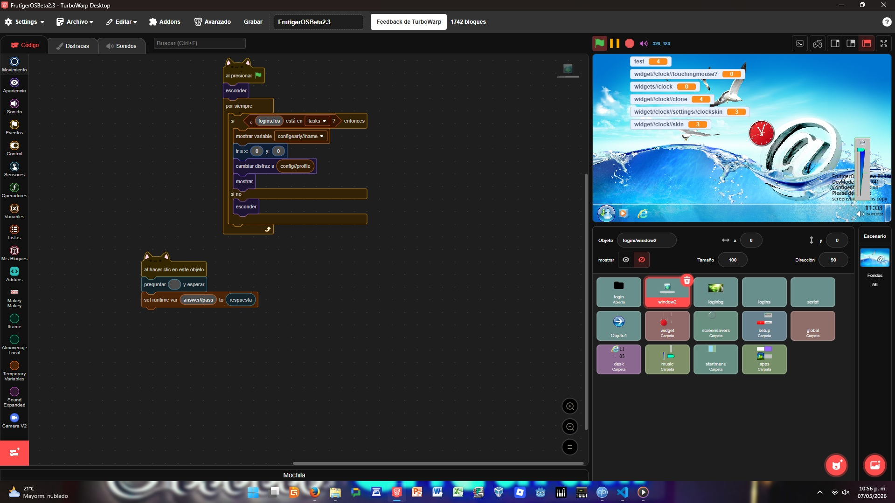

¡Hola! Soy Mike, un estudiante de sexto grado (al momento de escribir esto), que le encanta la tecnologia, la musica, programar y conocer los avances tecnológicos, además de estudiar los sistemas retro.
En este blog, escribiré sobre mis gustos, lo que pasa en mi dia a dia, y sobre opiniones criticas a estas. Este blog no está relacionado a la pagina "Blogger" y todo esto es creado por mi en el Visual Studio Code con HTML y CSS, ademas de un poco de JavaScript o JS. He aqui dejado enlaces a temas que escribire en este blog, como Pump It Up, lenguajes de programacion, la inteligencia artificial, adaptadores y placas madres así como computadoras y sistemas operativos; tambien sobre opiniones críticas hacia varios generos musicales y canciones.

Este es una imagen donde muestro uno de mis proyectos en turbowarp, se encuentra en mi perfil de scratch, les dejare el link en la seccion de Enlacess